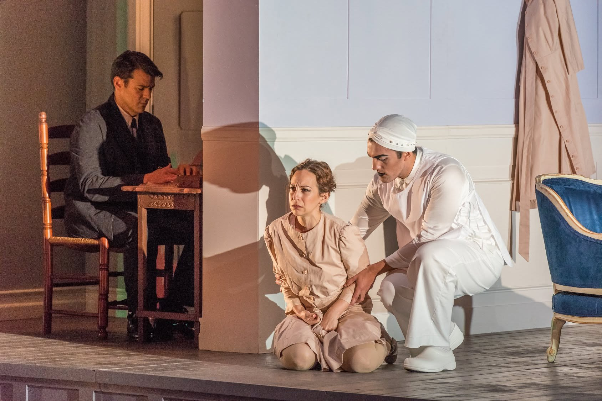

Since 1962
Our Story
Opera Saratoga began as Lake George Opera, founded by Fred Patrick and his wife, soprano Jeanette Scovotti, to present opera in English and showcase young American singers.
In 1998 the summer season moved to Saratoga Springs, and the company has made its home there ever since. Today it presents a summer festival of opera and musical theater, champions new work, and carries its music into schools and memory care communities throughout the year.
“Innovative world-class performances and programs inspire, educate, and heal audiences and artists through the power of the human voice.”
Milestones
- 1962Lake George Opera opens with Die Fledermaus at the Diamond Point Theatre, playing to an audience of 230.
- 1998Renovations send the summer season to the 500-seat Spa Little Theater in Spa State Park, Saratoga Springs. Meant to be temporary, it has been the company’s main stage ever since.
- 2011The company’s 50th season, and its formal name change to Opera Saratoga.
- 2023Mary Birnbaum is named General and Artistic Director, and the Young Artist program becomes the Festival Artist Program.
